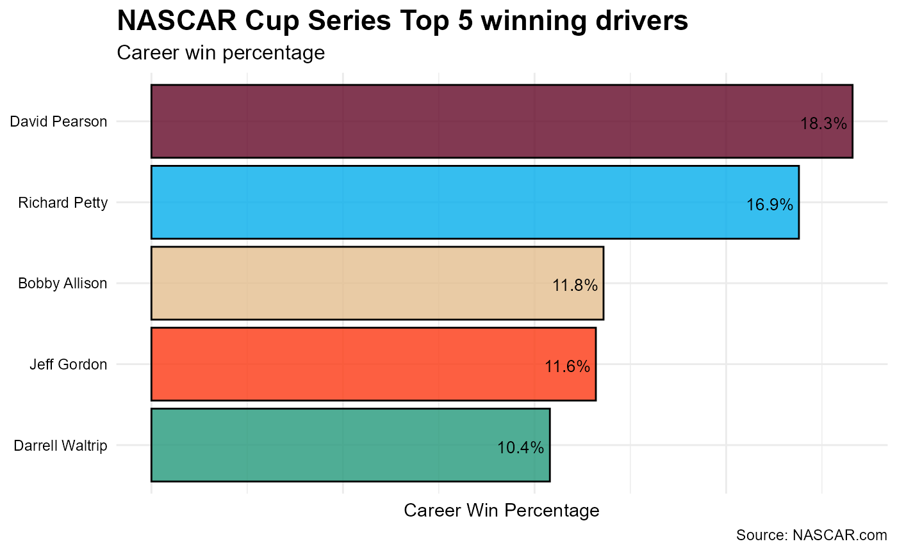
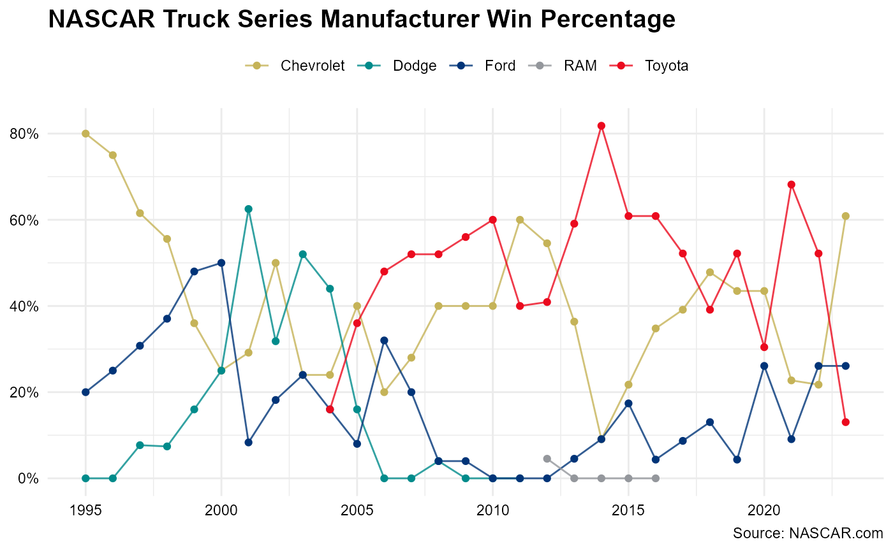

A Race Winning Strategy
Kyle Grealis
June 23, 2024
Source:vignettes/nascaR.data_vignette.qmd
nascaR.data_vignette.qmd## ── Attaching core tidyverse packages ──────────────────────── tidyverse 2.0.0 ──
## ✔ dplyr 1.1.4 ✔ readr 2.1.5
## ✔ forcats 1.0.0 ✔ stringr 1.5.1
## ✔ ggplot2 3.5.1 ✔ tibble 3.2.1
## ✔ lubridate 1.9.3 ✔ tidyr 1.3.1
## ✔ purrr 1.0.2
## [conflicted] Will prefer dplyr::filter over any other package.In the Pits
NASCAR is one of the top-tier racing sports in North America and
competes against F1 and IndyCar for the top viewship spot. Approximately
3.22 million people watch a race on any given weekend throughout the
season. The nascaR.data package is the result of wanting to
share a passion for the sport and provide an option to the typical go-to
packages when learning new data visualization tools.
nascaR.data is packed full of NASCAR results dating back
to the first Daytona Beach race in 1949! Use this package to discover
race trends across the NASCAR Cup Series, Xfinity Series, and Craftsman
Truck Series. Answer fun questions like “which driver has accumulated
the most wins overall?”, “which owner has the best top 10 percentage at
Daytona?”, or see which manufacturer has dominated which series in a
certain season. It’s all here, so let’s strap in to our race seats, fire
up those engines, and let’s take some warm-up laps.
Warming up the tires
nascaR.data provides access to 21 different datasets (7
per series) and are broken down by overall race results and driver,
owner, and manufacturer season & career records. Let’s check our
gauges and see what’s under the hood:
library(nascaR.data)Use ?nascaR.data::cup_race_data to view a list of
variable descriptions. This package has been designed to swap
cup for xfinity or truck to see
the same data structure (variables) for the respective series. Would you
rather inspect driver-specific results listed by season or their overall
career? No problem… this is an easy pit stop:
cup_driver_career or xfinity_owner_season or
truck_mfg_overall.
Manufacturer (mfg) results use the term “overall”
instead of “career” as is used for driver and owner.
cup_mfg_overall vs cup_driver_career
Green Flag!
Which drivers are in the Top 5 for wins in the NASCAR Cup Series?
First, organize the drivers in descending order by win. Then, subset to keep the Top 5 winningest drivers. Lastly, feed the data into a horizontal bar chart (some other tweaks will be applied to enhance the visual output).
cup_driver_career |>
arrange(desc(career_wins)) |>
slice_head(n = 5) |>
ggplot(aes(driver, career_wins)) +
geom_bar(stat = 'identity') +
coord_flip()
Wow! This doesn’t even look like a close race. Richard Petty clearly leads the field with 200 wins. However, let’s take a drive a little deeper into the turn and account for the number of races each driver competed in. What if we compare these same five drivers by win percentage?
cup_driver_career |>
arrange(desc(career_wins)) |>
slice_head(n = 5) |>
ggplot(aes(driver, career_win_pct)) +
geom_bar(stat = 'identity') +
coord_flip()
Accounting for Richard Petty’s 1185 races to David Pearson’s 575 races, imagine how many more wins Pearson would have if he competed in as many races as The King.
The Garage Area
Which manufacturer has the best win percentage by season?
Let’s go behind the pits and see what the manufacturers are up to in the Truck Series.
truck_mfg_season |>
ggplot(aes(season, mfg_season_win_pct, group = manufacturer, color = manufacturer)) +
geom_line() +
geom_point()
No clear trend emerges, though it appears that there may be a 5-year clustering of winning percentage. For example, the Dodges experienced success in the early 2000s, but started to fall off before exiting the series. And while Ford has seemingly had gradual improvement, you can clearly see the success of the Toyota camp since joining the Truck series in 2004.
Post-race
Collect your race winnings
How has the average money for winning a race changed over time?
cup <- cup_race_data |>
mutate(series = 'Cup') |>
filter(finish == 1) |>
select(season, race, finish, money, series)
xfinity <- xfinity_race_data |>
mutate(series = 'Xfinity') |>
filter(finish == 1) |>
select(season, race, driver, money, series)
truck <- truck_race_data |>
mutate(series = 'Truck') |>
filter(finish == 1) |>
select(season, race, driver, money, series)
bind_rows(cup, xfinity, truck) |>
group_by(series, season) |>
summarize(mean_money = mean(money, na.rm = TRUE)) |>
ggplot(aes(season, mean_money, group = series, color = series)) +
geom_point() +
geom_line()## Warning: Removed 24 rows containing missing values or values outside the scale range
## (`geom_point()`).## Warning: Removed 24 rows containing missing values or values outside the scale range
## (`geom_line()`).
Race winnings in the Cup series experienced exponential growth beginning in the 1980s while Xfinity and Truck Series winnings have remained relatively the same since 2000.
The Backstretch
I hope this gives you a little taste of what is included in this package. There’s plenty of opportunity to further clean and reshape the data for data visualizations or model prepping. I’ll be adding more data throughout the season.
Toolbox
nascaR.data was built with R version 4.4.0 with the
tidyverse (2.0.0), rUM (2.0.0), and
ggtext (0.1.2) packages used to preprocess and summarize
data.1–5